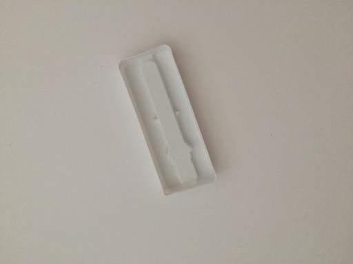
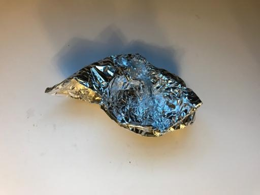
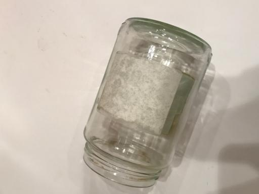
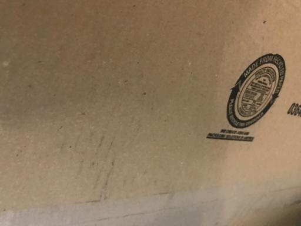
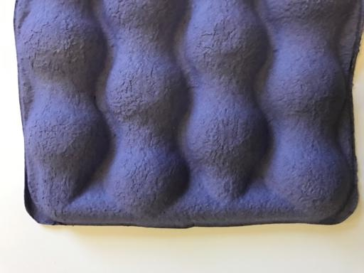
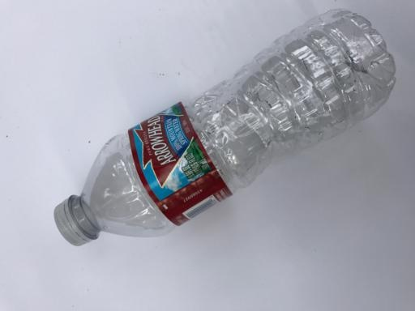

Five material families. Six upload pairs.
Upload the PDF to extract fictional lot details through your configured document provider. Upload the JPG for a broad material suggestion from the local model. Files are separate uploads; a photo does not supply weight or prices.
Plastic packaging inserts
1,200 kg · INR 35 / kg · illustrative subtotal INR 42,000


White moulded plastic packaging insert. Polymer identity is not established by the photograph.
Dataset label: plastic · Grade and condition unverified
Crumpled metal foil
750 kg · INR 85 / kg · illustrative subtotal INR 63,750


Crumpled metallic foil packaging. Alloy, coating and contamination are unverified.
Dataset label: metal · Grade and condition unverified
Used glass jars
2,000 kg · INR 6 / kg · illustrative subtotal INR 12,000


Used glass container with a label. Glass composition and suitability for a buyer are unverified.
Dataset label: glass · Grade and condition unverified
Corrugated cardboard packaging
1,000 kg · INR 12 / kg · illustrative subtotal INR 12,000


Brown cardboard packaging with printing. Board specification and moisture content are unverified.
Dataset label: cardboard · Grade and condition unverified
Moulded paper pulp packaging
800 kg · INR 10 / kg · illustrative subtotal INR 8,000


Moulded fibre packaging, labelled paper in the source dataset. Fibre composition and additives are unverified.
Dataset label: paper · Grade and condition unverified
Used plastic bottles
600 kg · INR 28 / kg · illustrative subtotal INR 16,800


Transparent beverage bottle with a cap and label. Exact polymer and suitability for recycling are not established by this photograph.
Dataset label: plastic · Grade and condition unverified
Real photos: Gary Thung and Mindy Yang, TrashNet. MIT license. Photos are unchanged, isolated-object examples from the existing held-out split. These examples do not establish industrial accuracy. The white plastic insert is a retained model failure case; see local-inference-results.json.